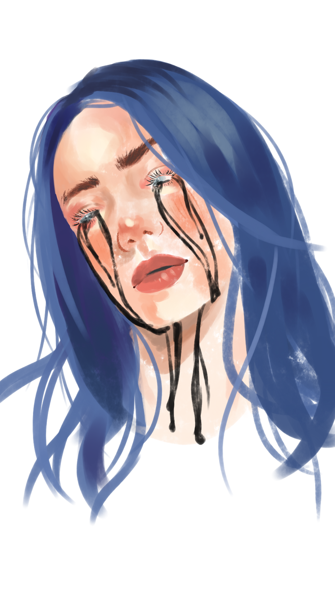
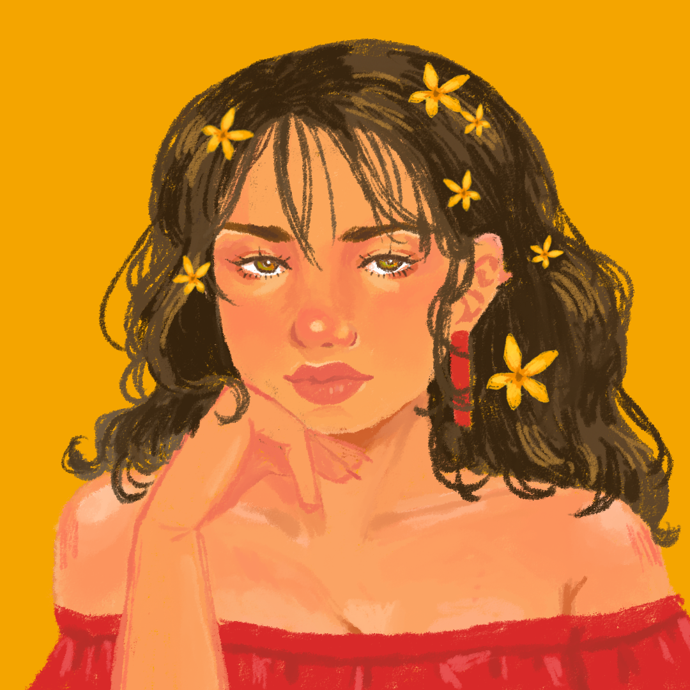
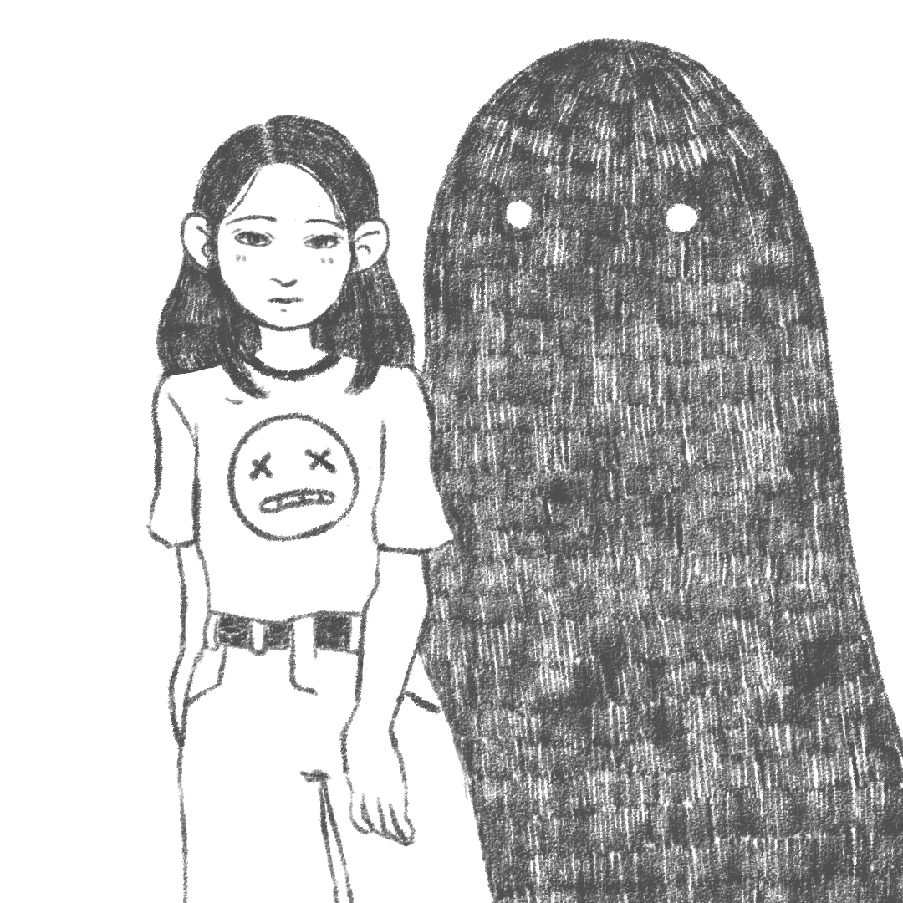

Come with Me

This one was a reminiscent of the time when I adopted my two pets, named Grisha and Oreo. Sadly, Oreo has passed away of sickness. We miss you already, Oreo :'(
Done with Paint tool Sai and Photoshop.
A Walk Down the Garden

Throw back to the time when I, a special friend of mine, Grisha, Oreo, and two imaginary dogs (added just for the lulz) went on a walk to a garden in the middle of the town. The kids was surprisingly well behaved.
Done with Paint tool Sai and Photoshop.
Billie

Yay fanart! A floating head portrait of Billie Eilish from her music video of "When the Party's Over". The animation was done on Photoshop, frame by frame. Too bad that I didn't understand how to put audio format on the video.
Done with Paint tool Sai and Photoshop.
Semi Realistic
Guess what, I could also do semi realistic. These were done for commision, respectively for a graduation and as a gift for a figure of an organisation.
Done with Paint tool Sai and Photoshop.
Bored Girl

Here to display my other style. Boring tho.
Done with Paint tool Sai and Photoshop.
Sketchy Video

Another video with different style. A representation of loneliness and the joy of a depressive state that a lonely person might find comforting.
Done with Paint tool Sai and Photoshop.
That was the end of a glimpse of my works. Want to see more? Hit me up to see more! Might as well click the follow button